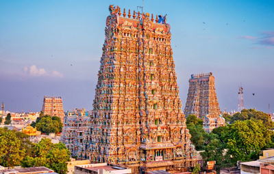
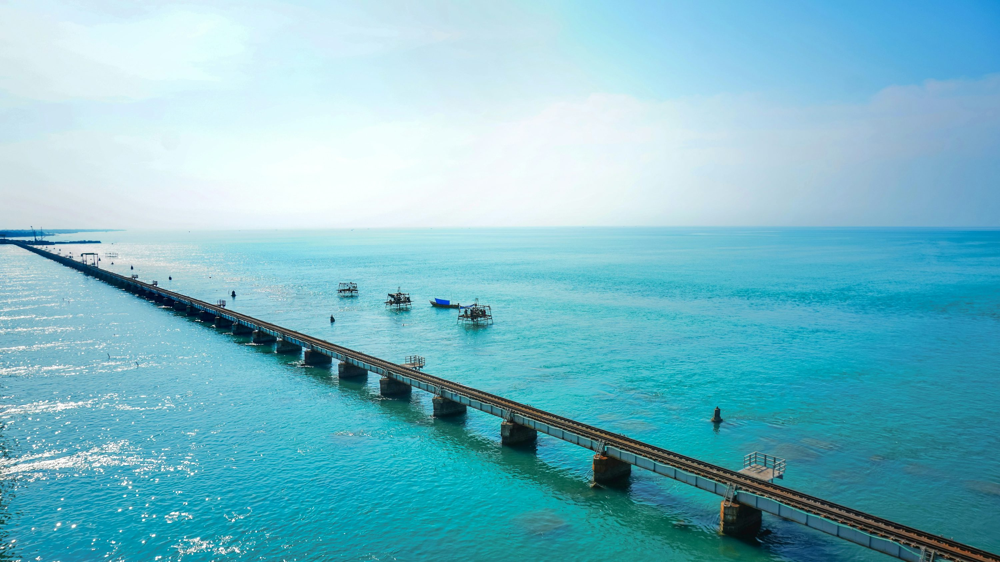

Chennai, the capital of Tamil Nadu, is known for Marina Beach, Kapaleeshwarar Temple,
Santhome Church, and rich Tamil culture.
⏰ Best Time: November – February
💰 Budget: ₹5,000 – ₹9,000 (3 days)
👨💼 Guide: Not required
🌤️ Weather: Tropical, 22°C – 32°C
📍 Location: Tamil Nadu, India
Madurai

Madurai, one of the oldest cities in India, is famous for the Meenakshi Amman Temple
and its cultural heritage.
⏰ Best Time: October – March
💰 Budget: ₹4,000 – ₹7,000 (2 days)
👨💼 Guide: Recommended at temple
🌤️ Weather: Warm, 20°C – 32°C
📍 Location: Tamil Nadu, India
Ooty
Ooty, also called the “Queen of Hill Stations,” is known for tea plantations,
Ooty Lake, and the Nilgiri Mountain Railway.
⏰ Best Time: March – June & September – November
💰 Budget: ₹5,000 – ₹8,000 (3 days)
👨💼 Guide: Not mandatory
🌤️ Weather: Cool, 12°C – 25°C
📍 Location: Nilgiri District, Tamil Nadu
Kanyakumari
Kanyakumari, the southernmost tip of India, is famous for the Vivekananda Rock Memorial,
Thiruvalluvar Statue, and sunrise/sunset views over the ocean.
⏰ Best Time: October – March
💰 Budget: ₹4,000 – ₹6,000 (2 days)
👨💼 Guide: Not needed
🌤️ Weather: Tropical, 20°C – 30°C
📍 Location: Tamil Nadu, India
Rameswaram

Rameswaram is a famous pilgrimage site, home to Ramanathaswamy Temple, Pamban Bridge,
and Dhanushkodi Beach.